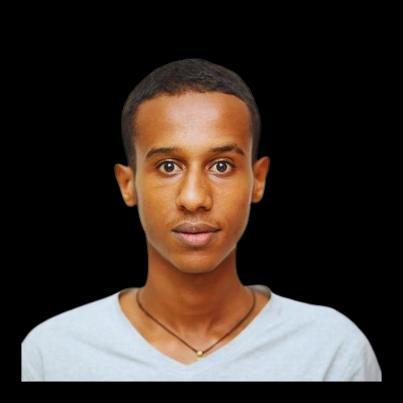
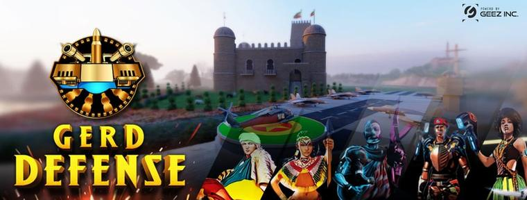
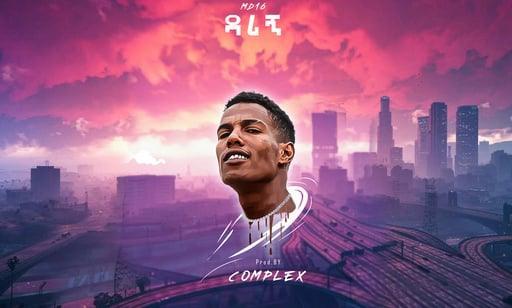
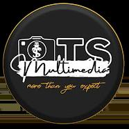
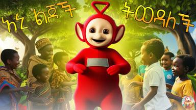
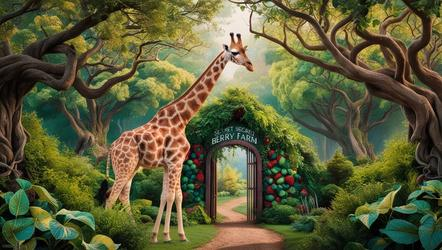
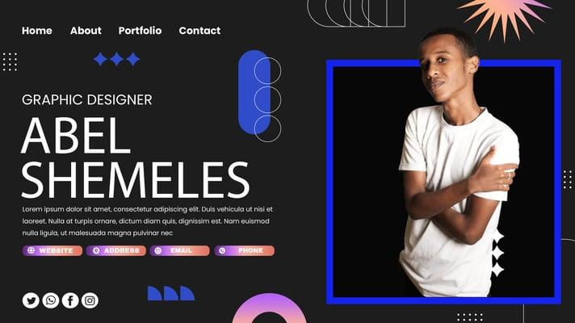

Video Editor & Visual Storyteller · Addis Ababa, Ethiopia · Working since 2019
A dynamic portfolio website built with Django for video editor Abel Shemeles: wedding films, concerts, events, podcasts and short-form video, with a project gallery and a click-to-edit CMS so he updates his own bio, skills and project cards directly on the page — no admin panel needed.

Real project artwork from Abel's portfolio, kept small on purpose so the page loads fast.

Concept art, characters and UI graphics for the Ethiopia GERD Defense game (Geez Inc.).

Cover design for a music release — portrait compositing over a stylised city skyline.

Event coverage and branding for MTS Multimedia: conferences, graduations and celebrations.

Bright, click-ready thumbnail design for the Ani Tube children's channel.

AI-generated scenes and frames for Ani Scripy — a Berry Farm storybook world.

Poster and identity design, including Abel's own graphic-designer brand artwork.
A visual showcase for the project, using Abel's own artwork in small, fast-loading sizes — no large video files. The full website is a Django application; its source code, including the preconfigured database with Abel's profile, projects and skills, is in the GitHub repository below. The site was previously hosted by SatiraLabs at littlekingo.duckdns.org.
View the source on GitHub Back to SatiraLabs portfolio